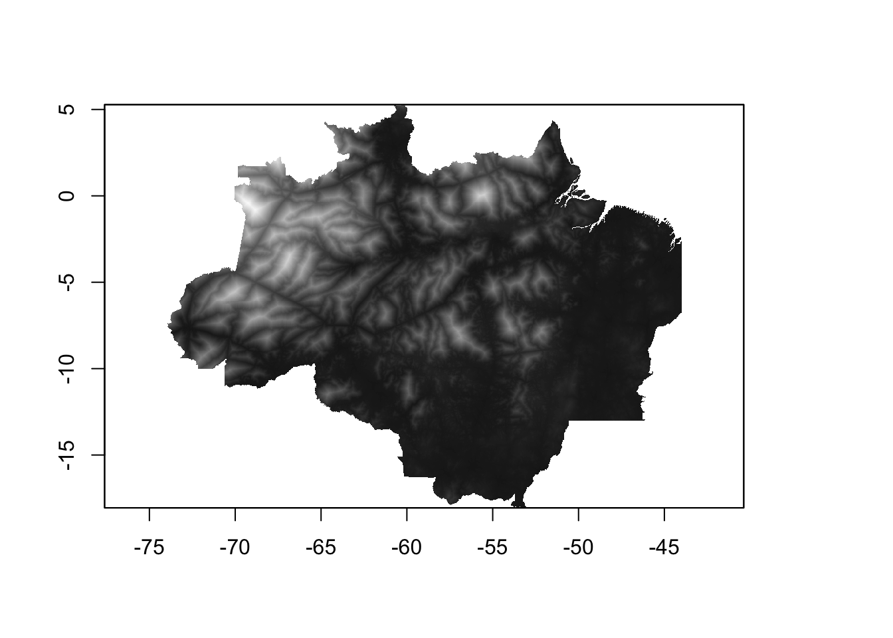
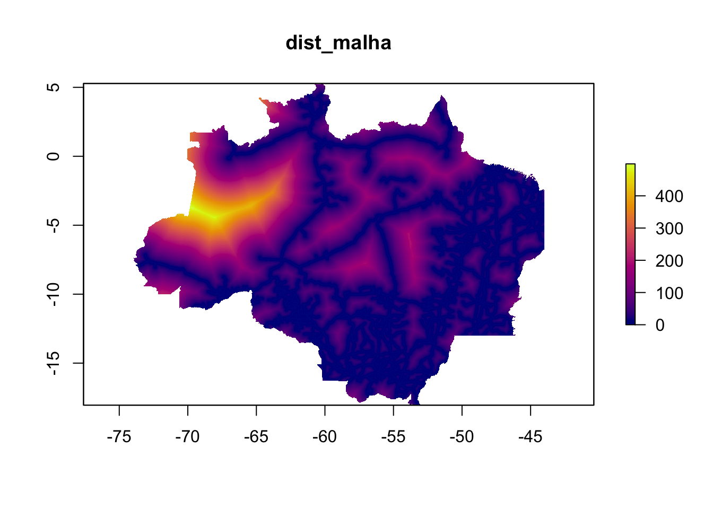
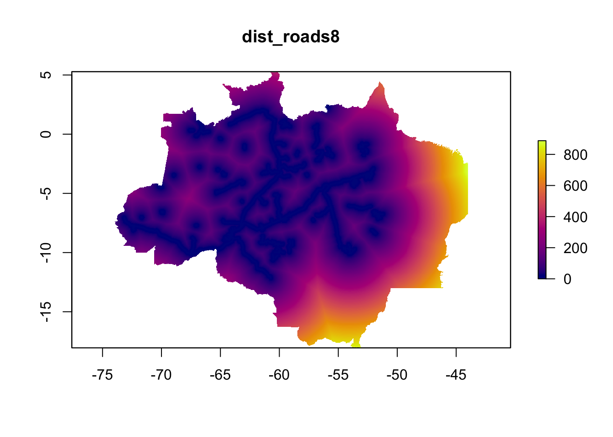
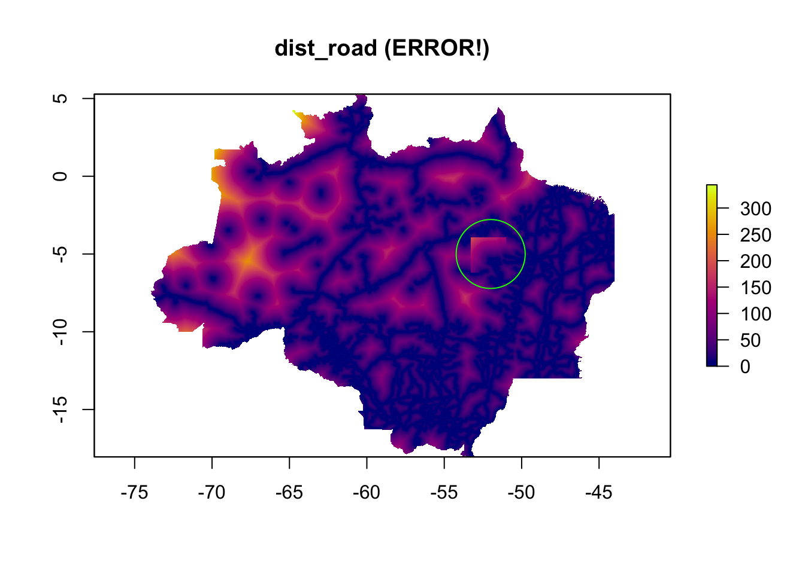
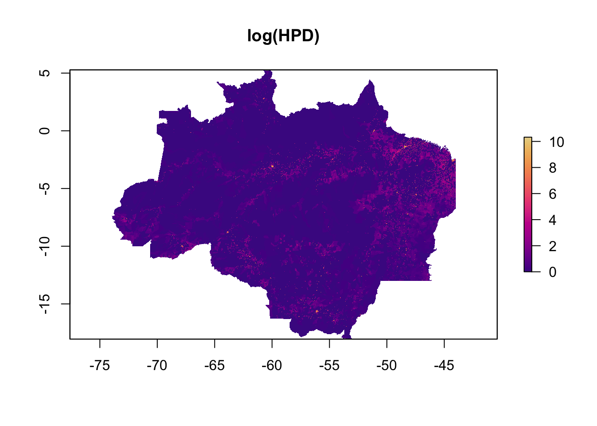
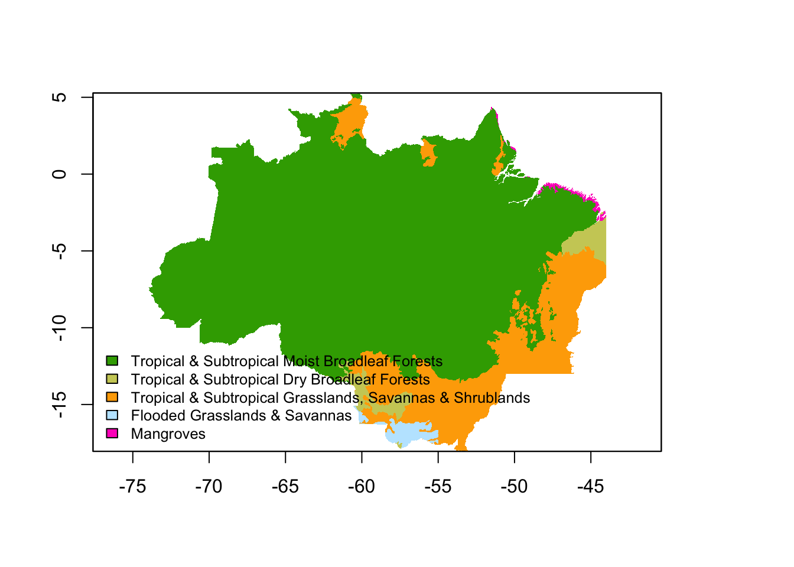
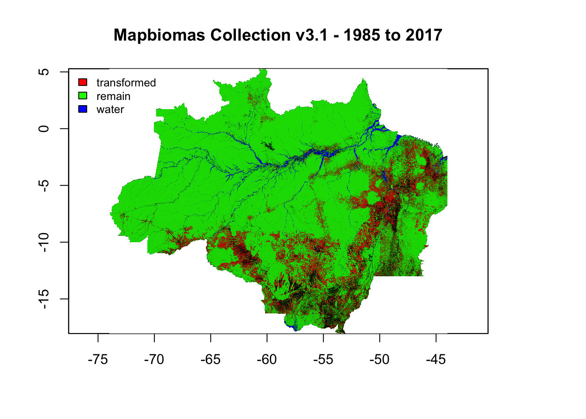
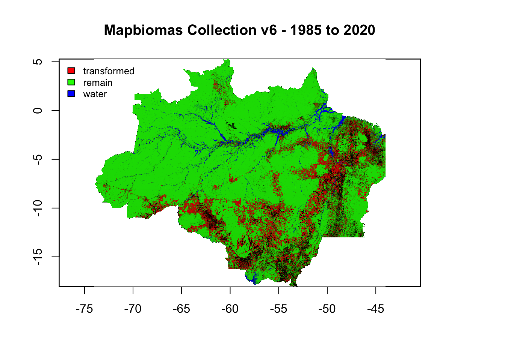
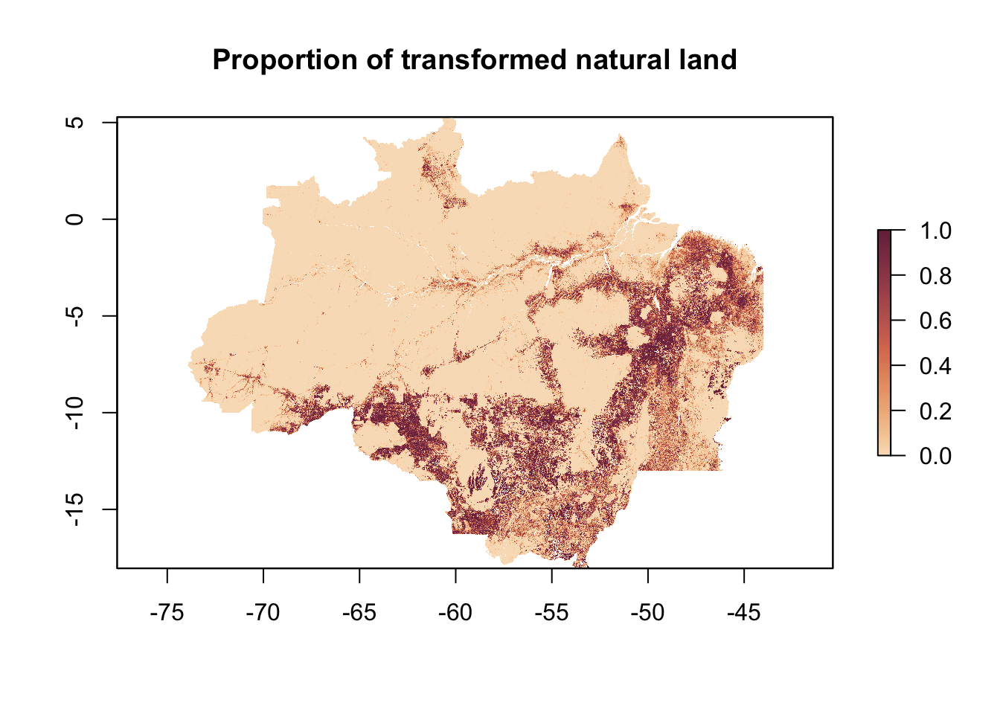
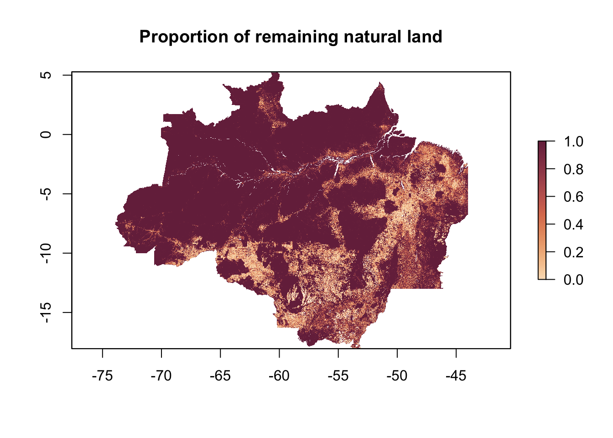

Update 1 terra indigena
Edgar Cifuentes
13/09/2022
Hi there, Here I’ll explain what I’ve done so far. I used Google Earth Engine (GEE) to compute layers at 1km resolution. I already sent in a google drive the first batch of layers, which were for getting the table ready for the matching analysis. Now, the second batch of layers are from mapbiomas collections to get reclassified land-use transitions per year: 1) natural to natural, 2) natural to transformed and 3) water. Below, I will go into more detail of each batch of layers.
Also, you can explore the layers in this GEE app, here:
https://fercholis.users.earthengine.app/view/terraindigenavisual
First batch (for matching analysis)
The first batch, and a recap from my last email, I created 1km-layers for the matching analysis. We decided to have few layers to match control pixels for the ones inside Indigenous Lands (IL). These layers are based on known factors affecting deforestation such as accessibility, distance to roads, human population density, biome. We also decided to exclude Conservation Units (CU) from the analysis to follow the reviewer’s comment on protected areas. Then, I created a table where each row has the pixel id, coordinates, and values for each layer.
Layers, table and script to make the table are in this folder:
https://drive.google.com/drive/folders/1GEy39jdoKdShx4gk2dTxjuOvETq4xJHR
Here is a more detailed explanation of each layer:
Indigenous Lands
For this layer, the pixel is either the id code of the Indigenous land or 0. I called the IL polygons directly from the mapbiomas project in GEE and then transformed it into a 1-km raster.

Conservation Units (4 layers)
These layers had the same procedure as IL. The pixel is either the id code of the CU or 0. I There are four CU datasets in mapbiomas project in GEE: 1) Federal Integral, 2) Federal Sustainable Use, 3) State Integral, 2) State Sustainable Use. There are individual 1-km layers for each CU type, but I masked them all out indiscriminately for the analysis.

Accessibility to cities (2015)
This layer comes from the Malaria Atlas Project et al. It is now deprecated as they created a new one in 2019 (see next layer). They calculated the time to travel to a populated area based on existing roads, rivers, topography, etc., by creating a friction map (e.g., moving through a road is faster than walking through the jungle).
https://explorer.earthengine.google.com/#detail/Oxford%2FMAP%2Faccessibility_to_cities_2015_v1_0
Citation
D.J. Weiss, A. Nelson, H.S. Gibson, W. Temperley, S. Peedell, A. Lieber, M. Hancher, E. Poyart, S. Belchior, N. Fullman, B. Mappin, U. Dalrymple, J. Rozier, T.C.D. Lucas, R.E. Howes, L.S. Tusting, S.Y. Kang, E. Cameron, D. Bisanzio, K.E. Battle, S. Bhatt, and P.W. Gething. A global map of travel time to cities to assess inequalities in accessibility in 2015. Nature (2018). (doi:10.1038/nature25181)[https://doi.org/10.1038/nature25181]

Accessibility to healthcare (2019)
This layer is based on the previous one but now to access the nearest hospital or clinic. Underlying data for the friction map was improved as well.
Citation
D.J. Weiss, A. Nelson, C.A. Vargas-Ruiz, K. Gligorić, S. Bavadekar, E. Gabrilovich, A. Bertozzi-Villa, J. Rozier, H.S. Gibson, T. Shekel, C. Kamath, A. Lieber, K. Schulman, Y. Shao, V. Qarkaxhija, A.K. Nandi, S.H. Keddie, S. Rumisha, E. Cameron, K.E. Battle, S. Bhatt, P.W. Gething. Global maps of travel time to healthcare facilities. Nature Medicine (2020).

Distance to roads (3 layers)
Here there are two shapefiles that Carlos sent: malha_viaria and roads8_dis_sad. I’m not aware of their difference neither their source. We calculated the distance using Alejandro’s script for both shapefiles and for the unified version of both. These are named: dist_malha, dist_roads8 and dist_road, respectively.

IMPORTANT NOTE: I had to export again dist_road because I just found that there was an error when exporting it from GEE (see below), so that is reflected in the table. The re-exported version is correct and I updated the table.

Human Population Density (2015)
This dataset is based on population count from the The Global Human Settlement Layer (GHSL). I selected the year 2015 from available layers for 1975, 1990, 2000, 2015. Then the number of people per pixel was divided by the area of the pixel to get values in terms of [ind/km2].
https://developers.google.com/earth-engine/datasets/catalog/JRC_GHSL_P2016_POP_GPW_GLOBE_V1
Citation
European Commission, Joint Research Centre (JRC); Columbia University, Center for International Earth Science Information Network - CIESIN (2015): GHS population grid, derived from GPW4, multitemporal (1975, 1990, 2000, 2015). European Commission, Joint Research Centre (JRC) [Dataset] PID: https://data.europa.eu/89h/jrc-ghsl-ghs_pop_gpw4_globe_r2015a

Biomes
This layer comes from the RESOLVE Ecoregions dataset. There are 846 terrestrial ecoregions grouped into 14 biomes. I selected biomes for simplicity and transformed the polygons into a 1-km raster.
https://developers.google.com/earth-engine/datasets/catalog/RESOLVE_ECOREGIONS_2017#description
https://ecoregions2017.appspot.com/
Citation
Dinerstein, E., Olson, D., Joshi, A., Vynne, C., Burgess, N. D., Wikramanayake, E., … & Saleem, M. (2017). An ecoregion-based approach to protecting half the terrestrial realm. BioScience, 67(6), 534-545.

Second batch (mapbiomas land use change)
Here I reclassified values from mapbiomas transition layers in collection v3.1 and collection v6 for each year. Additionally, I did the same for a single transition layer from the beginning to the end of the study period (i.e., 1985 to 2017 for collection v3.1 and 1985 to 2020 for collection v6).
reclassification
Then I defined three types of transitions: 1) natural to natural (remain), 2) natural to transformed (transf) and 3) water (in case we need to exclude pixels having more water than land). All other transitions types were masked (see table below). Each reclassified pixel was multiplied by its area and then aggregated to the 1-km. So, there are 1-km layers of the area for each reclassified transition per year.

Response variable
I think the idea is to get the proportion of natural land being transformed as our response variable or the opposite. Then we can fit a logistic regression in the post-matching analysis.
option 1: proportion of transformed natural land
\[ {Response\ variable} = \frac{transformed} {transformed + remain} \]

option 2: proportion of transformed natural land
\[ {Response\ variable} = \frac{remain} {transformed + remain} \]

Mapbiomas Transition codes
MapBiomas land-use codes
Land use classification of map biomas are specified in the following images.
caption
MapBiomas transition codes
Transition (land change) codes are based on the following information.
https://mapbiomas.org/colecoes-mapbiomas-1?cama_set_language=pt-BR
Os mapas de transição possuem códigos calculados com a junção do código do primeiro e do segundo ano, conforme a fórmula abaixo:
\[ (ano1 \times 100) + ano2 \] Exemplo:
303 = floresta que permaneceu floresta
315 = floresta que foi convertida para pastagem
1515 = pastagem que permaneceu pastagem
1524 = pastagem que foi convertida para infraestrutura urbana
Reclassified transitions
The following tables shows the transition type and the reclassified transition
exclude: natural to natural
transformed: natural to transformed
water: transition where there was water in the first place.
exclude: all other types of transitions.
Transition table collection 3.1
Transition table collection 6
Cheers!